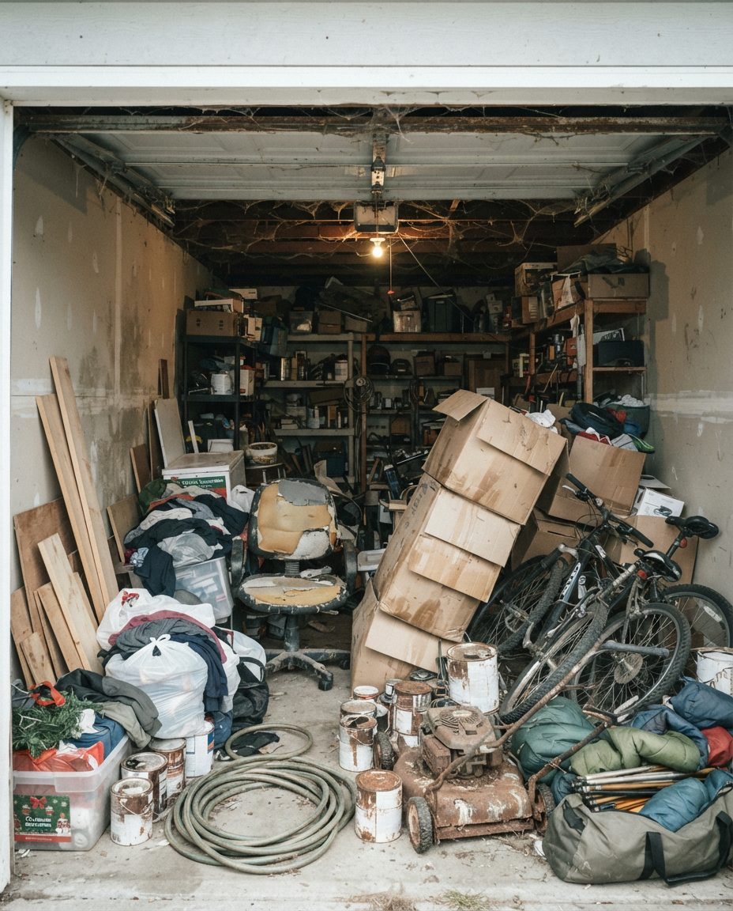
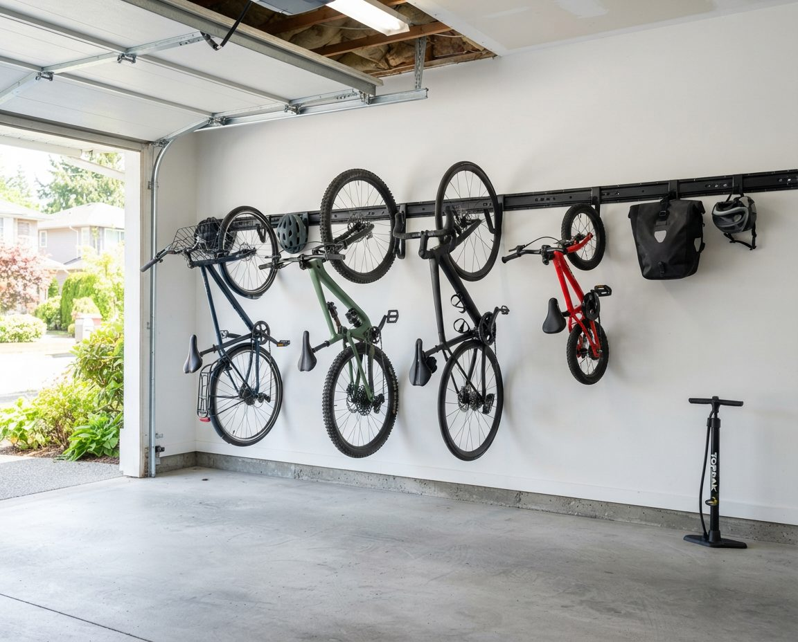
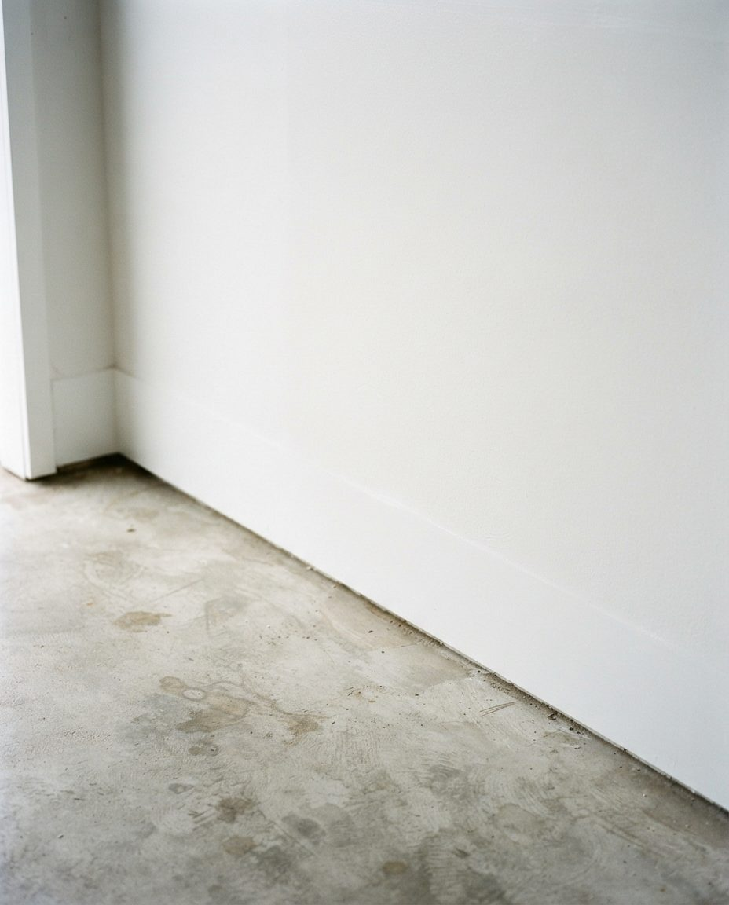
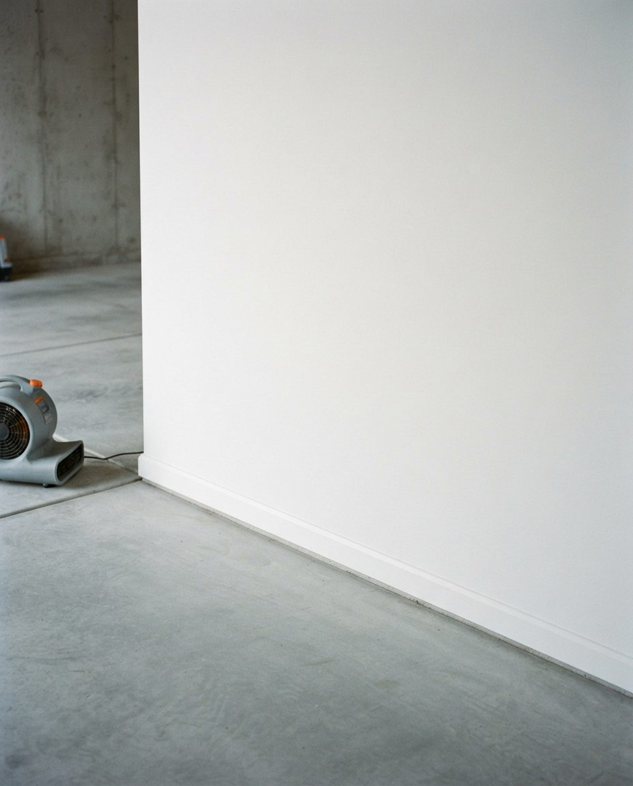

The Cart Bay: Port Moody's Bear Rules Decide the Layout
Black bears pass through Port Moody neighbourhoods, and the City writes its waste rules around them. Its Bear Essentials page tells residents to secure garbage and green waste carts “in a bear-resistant solid waste enclosure, like your closed garage, until pickup day”. Carts go to the pick-up spot between 5:30 and 7:30 a.m. on collection day only, and they come back inside that evening. The City says mismanaged attractants can bring a fine of up to $1,000.
The same page lists other things that belong in a secure garage: the freezer, which should stay off decks and out of carports, the covered barbecue, pet food, and fruit picked from the yard. Most garages we see were filled long before anyone planned for that. The carts end up parked in front of the shelving, the freezer blocks the house door, and the car moves to the driveway.
| Item | Where it goes | What we check |
|---|---|---|
| Garbage and green waste carts | A marked bay on the side wall nearest the overhead door | Lids open fully under any shelf above, and the roll-out path does not cross the car |
| Chest or upright freezer | The back wall, within reach of an outlet | The lid or door opens with the car parked, and nothing is stacked on top |
| Barbecue | A floor bay of its own, cleaned and covered | A clear route to the patio. Follow the cylinder label for where the propane is kept. |
| Pet food and bird seed | Lidded bins on a shelf, off the slab | Lids that latch, and a scoop that lives in the bin so the bag is never left open |
| Picked fruit and garden harvest | A ventilated crate shelf near the house door | Nothing sits on the floor where it can be forgotten |
On site we chalk two outlines on the floor before we talk about shelving. The first is your vehicle with both doors open. The second is the cart bay with the lids up. Storage gets the space that is left, which is usually more than people expect once the walls and ceiling are in use.


Floor first, then the wallsAn example layout, not a photo of a Port Moody client's garage. Once the floor is clear there is room to give the carts and the car fixed positions, and everything else goes on the walls around them.
Put the carts where collection morning takes one trip
Carts that sit beside the overhead door roll straight out in the morning and straight back in that evening. Carts stored behind the car mean moving the car first, and that is how they end up left outside overnight. If your garage has a side door, we check whether the carts fit through it, because that can free the front corner for bikes.
Garage Organization Systems We Install in Port Moody
A garage organization system is a set of parts, and the mix changes with the garage. We choose from more than one supplier after measuring, and quote the hardware at cost. These are the five we use most in Port Moody and what each one is for.
| System | Best for | Port Moody detail |
|---|---|---|
| Wall track with hooks and baskets | Bikes, garden tools, helmets, PFDs, dog leads | Starts above cart-lid height on the cart-bay wall, so the lids still swing |
| Wall cradles and ceiling hoists | Paddleboards, kayaks, roof boxes | Galvanized or stainless hardware for gear that has been in Burrard Inlet |
| Overhead racks | Camping bins, holiday boxes, luggage | Set above the hood, clear of the door track and a raised tailgate |
| Steel shelving | Sealed bins, paint, bulk household supplies | Lowest shelf off the slab. Powder-coated or galvanized frames. |
| Closed cabinets | Chemicals, power tools, anything with a smell | Latching doors, raised on legs or a wall cleat |

Bins with lids, labels facing outAn example layout, not a photo of a Port Moody client's garage. Each bin is labelled on two faces and listed on a written zone map, so anyone in the house can find the camping stove and put it back.
Port Moody Garages by Neighbourhood
Port Moody had 33,535 residents at the 2021 census, spread around the head of Burrard Inlet in neighbourhoods built decades apart. Real estate guides date most College Park and Glenayre homes to the 1960s through 1980s and most Heritage Mountain and Heritage Woods homes to the 1990s and early 2000s. The garage follows the era.
| Area | What we usually find | What the plan focuses on |
|---|---|---|
| Heritage Mountain and Heritage Woods | Detached and attached homes from the 1990s to mid-2000s, next to Bert Flinn Park. | A cart bay, a freezer position and bike and dog gear, with both cars kept inside. |
| College Park, Glenayre and Seaview | Family homes mostly built from the 1960s to the 1980s. | Older wall finishes, damp wall bases and decades of contents to sort first. |
| Moody Centre | The city's oldest housing, with some homes dating to the 1940s. | Small or detached garages where every wall and the ceiling have to work. |
| Inlet Centre: Newport Village, Suter Brook and Klahanie | Newer apartment and townhouse communities near Inlet Centre station. | Strata rules, shared walls and compact storage that keeps the stall usable. |
| Ioco, Pleasantside and Barber Street | Detached homes on the north shore of the inlet, close to the water. | Paddle and boat gear, salt rinse-down and a drying zone. |
Further up the hill, Anmore and Belcarra have their own page, because the buildings there are mostly acreage garages and shops.
Salt-Water Gear from Rocky Point and Bikes from the Trails
Rocky Point Park at 2800 Murray Street has a boat launch, a recreational pier and kayak and paddleboard rentals, and the Shoreline Trail runs from it around the end of the inlet. A lot of Port Moody households own the board or the boat instead of renting it, and it lives in the garage between tides.
Burrard Inlet is salt water, and that changes the storage plan. Salt left on plain steel hooks and fasteners rusts them, and wet neoprene in a closed bin smells within days. We set up the paddle zone in the order you use it. Boards and boats get a fresh-water rinse on the driveway and go onto wall cradles or a ceiling hoist above the hood. Paddles, PFDs, leashes and wetsuits hang on open galvanized or stainless hooks over a boot tray, where they can drip. Dry bags and spare fins go in a labelled bin once they are dry.
Bikes take the other wall. Hung vertically on wall track at staggered heights, four bikes fit on about a metre and a half of wall, and helmets and a floor pump sit on the same track. Bert Flinn Park at 1300 David Avenue has a wide gravel off-leash trail that starts at Heritage Mountain Boulevard, so in the houses nearby we add a low hook rail by the house door for leads, towels and a mud bin.

Four bikes on one stretch of wallAn example layout, not a photo of a Port Moody client's garage. Vertical hanging frees the floor under the bikes, and the track carries helmets and bags without more holes in the wall.
If bikes are most of the problem, our page on garage bike storage covers vertical racks, ceiling lifts and e-bike charging in more detail.
Older Garages in Moody Centre, College Park and Glenayre
A garage from the 1960s or 1970s was sized for one or two smaller cars and very little storage. Forty-odd wet winters later, the bottom of the wall often shows it: stained drywall or panelling, a tide line on the concrete, and boxes that have sat against both.


Dry the wall before you load itAn example layout, not a photo of a Port Moody client's garage. A wall base that stays damp will ruin whatever is stored against it. We clean and dry it, then keep storage off that wall or leave an air gap behind it.
Before we hang anything in an older garage, we find out what the wall is made of. Bare studs take wall track well. Panelling over unknown framing does not, so we locate the studs or switch to freestanding shelving. If the wall base is stained or smells musty, read our page on mould in a garage for what we look for. And if the garage holds decades of contents, the job starts with garage decluttering, with the system installed once the floor is visible.
Keeping Stored Things Dry
Port Moody winters are long and wet, and an unheated garage stays close to outdoor humidity for months. The slab is cold the whole time, so anything porous that touches it draws moisture from below.

Cardboard fails from the bottom upAn example layout, not a photo of a Port Moody client's garage. Boxes on a slab soak up moisture, then the photos, books and fabric inside follow.
Three rules handle most of it. Anything that matters goes into a plastic bin with a latching lid, which also keeps food smells in. The lowest shelf sits off the floor, high enough that a wet slab or a leaking door seal never reaches it. Anything fixed to an outside wall gets an air gap behind it. For hardware and how each type holds up in this climate, see garage storage solutions in Burnaby, which covers the same choices in more depth.
Townhouse and Strata Garages
Townhouse garages in Heritage Woods and around Inlet Centre are narrower, and the carts, bikes and a car compete for one stall. We put the carts in the front corner, run wall track down one side only, and move seasonal bins to an overhead rack so the walkway to the house door stays open.
Send the strata bylaws with your quote request
Many strata corporations limit what owners can fasten to a wall shared with the next unit, and some require the garage to stay usable for parking. We read the bylaws before we design. Where drilling is restricted, we use freestanding shelving, braced and levelled, and keep storage clear of the stall.